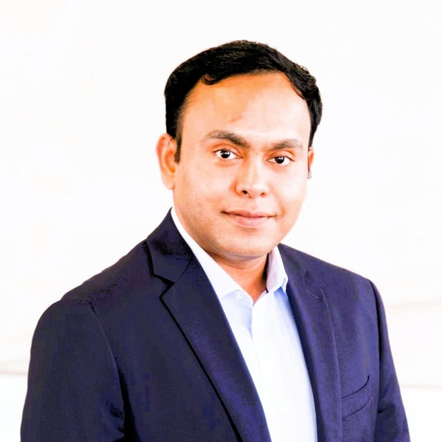
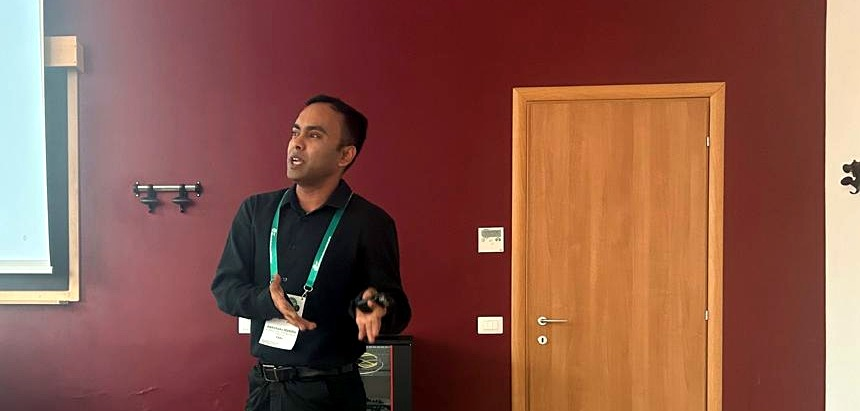
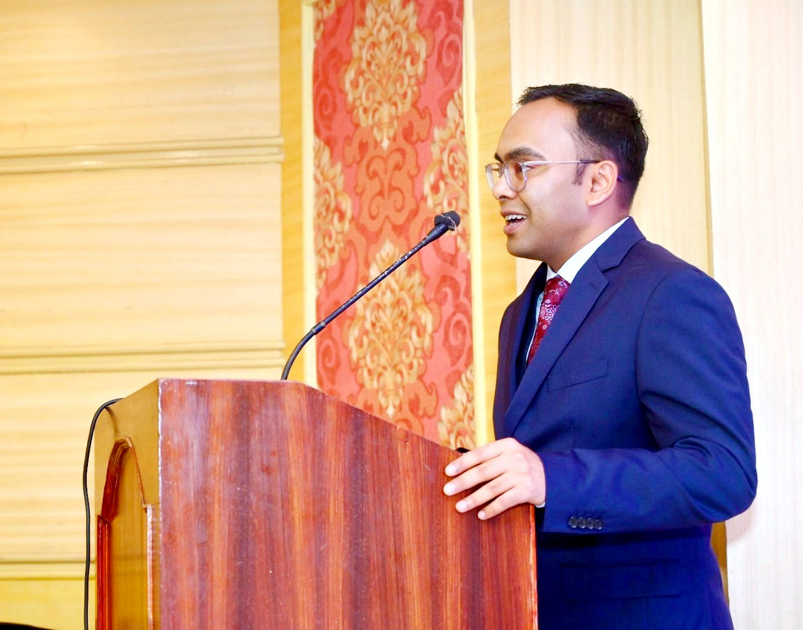

<title>Abhishake Kundu</title>
<meta name="claude:viewport-fit-sides" content="cover">
<style>
/* Layout: single-column research-CV site; slim sticky nav, content rail capped for reading, hairline rules marking section boundaries (academic-paper convention) */
:root{
  --bg:#F4F6F5;
  --surface:#FFFFFF;
  --fg:#16231F;
  --muted:#5B6B67;
  --accent:#0B6E63;
  --border:#D9E1DE;
  --font-display:'Fraunces',Georgia,serif;
  --font-body:'Source Sans 3',-apple-system,system-ui,sans-serif;
  --font-mono:'IBM Plex Mono','SF Mono',Consolas,monospace;
}
@media (prefers-color-scheme: dark){
  :root:not([data-theme="light"]){
    --bg:#0D1412; --surface:#141F1C; --fg:#E7EDEA; --muted:#8EA19C; --accent:#35C9B6; --border:#253330;
    color-scheme: dark;
  }
}
:root[data-theme="dark"]{
  --bg:#0D1412; --surface:#141F1C; --fg:#E7EDEA; --muted:#8EA19C; --accent:#35C9B6; --border:#253330;
  color-scheme: dark;
}

*{box-sizing:border-box}
html,body{margin:0}
body{
  background:var(--bg);
  color:var(--fg);
  font-family:var(--font-body);
  font-size:16px;
  line-height:1.6;
  padding-left:max(16px, env(safe-area-inset-left,0px));
  padding-right:max(16px, env(safe-area-inset-right,0px));
}
body::before{
  content:"";
  position:fixed; inset:0 0 auto; height:env(safe-area-inset-top,0px);
  z-index:10; background:var(--bg);
}
a{color:var(--accent); text-decoration:none}
a:hover{text-decoration:underline}
h1,h2,h3{font-family:var(--font-display); font-weight:600; text-wrap:balance; margin:0}
.wrap{max-width:720px; margin:0 auto}
.rail{max-width:65ch}
code,.mono{font-family:var(--font-mono)}
hr.rule{border:none; border-top:1px solid var(--border); margin:0}
.tabular{font-variant-numeric: tabular-nums}

/* nav */
nav.topnav{
  position:sticky; top:env(safe-area-inset-top,0px); z-index:5;
  background:color-mix(in srgb, var(--bg) 88%, transparent);
  backdrop-filter: blur(6px);
  border-bottom:1px solid var(--border);
}
nav.topnav .inner{
  max-width:720px; margin:0 auto;
  display:flex; flex-wrap:wrap; align-items:center; gap:4px 18px;
  padding-block:12px;
}
nav.topnav .brand{
  font-family:var(--font-display); font-weight:600; font-size:1.02rem;
  margin-right:auto; white-space:nowrap;
}
nav.topnav a{
  color:var(--muted); font-size:.88rem; letter-spacing:.02em; white-space:nowrap;
  padding:4px 2px; border-bottom:2px solid transparent;
}
nav.topnav a:hover, nav.topnav a.active{color:var(--fg); text-decoration:none; border-bottom-color:var(--accent)}

/* hero */
header.hero{padding-block:48px 0}
.hero-stack{position:relative; margin-bottom:34px}
.hero-stack::before{
  content:""; position:absolute; z-index:0;
  top:18px; left:18px; right:-16px; bottom:-18px;
  background:var(--accent);
}
.hero-card{
  position:relative; z-index:1;
  background:var(--surface); border:1px solid var(--border);
  padding:32px clamp(20px,4vw,40px);
}
.badge{
  width:clamp(92px,16vw,132px); height:clamp(92px,16vw,132px); border-radius:50%;
  background:var(--accent); color:var(--surface);
  display:flex; align-items:center; justify-content:center;
  font-family:var(--font-display); font-weight:600; font-size:1.3rem;
  flex:none; overflow:hidden;
}
.badge img{width:100%; height:100%; object-fit:cover; display:block}
.hero-top{display:flex; align-items:center; gap:18px; flex-wrap:wrap}
h1.name{font-size:clamp(2rem,5vw,2.7rem); line-height:1.05}
.role{color:var(--muted); font-size:1.05rem; margin-top:10px}
.role strong{color:var(--fg); font-weight:600}
.pitch{margin-top:18px; font-size:1.08rem; max-width:62ch}
.contact-row{display:flex; flex-wrap:wrap; gap:10px 18px; margin-top:22px; align-items:center}
.contact-item{display:flex; align-items:center; gap:8px; font-size:.92rem}
.copy-btn{
  font-family:var(--font-body); font-size:.76rem; letter-spacing:.03em;
  background:transparent; color:var(--muted); border:1px solid var(--border);
  border-radius:5px; padding:3px 8px; cursor:pointer;
}
.copy-btn:hover{color:var(--fg); border-color:var(--muted)}
.copy-btn[data-copied="true"]{color:var(--accent); border-color:var(--accent)}
a.cv-btn{background:var(--accent); color:var(--surface); padding:7px 14px; border-radius:3px; font-size:.85rem; font-weight:600; text-decoration:none; display:inline-block}
a.cv-btn:hover{opacity:.88; text-decoration:none}

/* stats strip */
.stats-wrap{padding-block:0 44px}
.stats-grid{display:grid; grid-template-columns:repeat(4,1fr); gap:1px; background:var(--border); border:1px solid var(--border)}
@media (max-width:620px){.stats-grid{grid-template-columns:repeat(2,1fr)}}
.stat-tile{background:var(--surface); padding:22px 14px; text-align:center}
.stat-tile.shade-1{background:color-mix(in srgb, var(--accent) 14%, var(--surface))}
.stat-tile.shade-2{background:color-mix(in srgb, var(--accent) 38%, var(--surface))}
.stat-tile.shade-3{background:color-mix(in srgb, var(--accent) 64%, var(--surface))}
.stat-tile.shade-3 .stat-num, .stat-tile.shade-3 .stat-label{color:var(--surface)}
.stat-tile.shade-3 .stat-label{opacity:.88}
.stat-tile.shade-4{background:var(--accent)}
.stat-tile.shade-4 .stat-num, .stat-tile.shade-4 .stat-label{color:var(--surface)}
.stat-tile.shade-4 .stat-label{opacity:.88}
.stat-num{font-family:var(--font-display); font-size:2rem; font-weight:600; line-height:1}
.stat-label{font-family:var(--font-mono); font-size:.68rem; letter-spacing:.06em; text-transform:uppercase; color:var(--muted); margin-top:6px}
.photo-reveal{
  display:block; width:280px; max-width:100%; margin:18px auto 0;
  padding:0; border:1px solid var(--border); background:none; cursor:pointer;
  position:relative; overflow:hidden; font:inherit; text-align:left;
}
.photo-reveal img{
  display:block; width:100%; height:172px; object-fit:cover;
  filter:grayscale(1) brightness(1.08) contrast(.9); opacity:.78;
  transition:filter .35s ease, opacity .35s ease;
}
.photo-reveal:hover img, .photo-reveal:focus-visible img, .photo-reveal.revealed img{
  filter:none; opacity:1;
}

/* sections */
section{padding-block:44px}
section + section{border-top:1px solid var(--border)}
.eyebrow{
  font-family:var(--font-mono); font-size:.72rem; letter-spacing:.12em; text-transform:uppercase;
  color:var(--accent); margin-bottom:10px; display:flex; align-items:center; gap:8px;
}
.eyebrow::before{content:""; display:inline-block; width:9px; height:9px; background:var(--accent); flex:none}
h2.sectitle{font-size:1.5rem; margin-bottom:22px}
.lede{color:var(--muted); max-width:60ch; margin-bottom:24px}

/* research split */
.split-grid{display:grid; grid-template-columns:1fr 1fr; gap:28px}
@media (max-width:620px){.split-grid{grid-template-columns:1fr}}
.split-card h3{font-size:.95rem; font-family:var(--font-mono); text-transform:uppercase; letter-spacing:.07em; color:var(--muted); margin-bottom:10px; font-weight:600}
.split-card p{margin:0}

/* chips */
.chiprow{display:flex; flex-wrap:wrap; gap:8px; margin-top:22px}
.chip{
  font-family:var(--font-mono); font-size:.78rem;
  border:1px solid var(--border); border-radius:5px; padding:4px 10px; color:var(--muted);
}
.chip.accent{color:var(--accent); border-color:var(--accent)}

/* timeline */
.tl-item{display:grid; grid-template-columns:150px 1fr; gap:20px; padding-block:18px}
.tl-item + .tl-item{border-top:1px solid var(--border)}
@media (max-width:560px){.tl-item{grid-template-columns:1fr; gap:4px}}
.tl-date{font-family:var(--font-mono); font-size:.82rem; color:var(--muted); white-space:nowrap}
.tl-org{font-weight:600; font-size:1.02rem}
.tl-role{color:var(--accent); font-size:.95rem; margin-top:2px}
.tl-detail{color:var(--muted); font-size:.92rem; margin-top:8px; line-height:1.55}
.tl-detail b{color:var(--fg); font-weight:600}

/* education */
.edu-item{padding-block:14px}
.edu-item + .edu-item{border-top:1px solid var(--border)}
.edu-deg{font-weight:600}
.edu-sub{color:var(--muted); font-size:.92rem; margin-top:4px}

/* publications */
.pub-group-label{
  font-family:var(--font-mono); font-size:.76rem; letter-spacing:.08em; text-transform:uppercase;
  color:var(--muted); margin:28px 0 12px;
}
.pub-group-label:first-child{margin-top:0}
.pub-item{display:flex; gap:16px; padding-block:14px}
.pub-item + .pub-item{border-top:1px solid var(--border)}
.pub-year{font-family:var(--font-mono); font-size:.85rem; color:var(--muted); min-width:3.2em; flex:none; padding-top:2px}
.pub-body p{margin:0}
.pub-venue{color:var(--muted); font-style:italic}
.pub-links{margin-top:4px; display:flex; gap:12px; font-size:.82rem; font-family:var(--font-mono)}
.status-tag{
  font-family:var(--font-mono); font-size:.68rem; letter-spacing:.05em; text-transform:uppercase;
  color:var(--accent); border:1px solid var(--accent); border-radius:4px; padding:1px 6px; margin-left:6px;
}

/* teaching */
.teach-block{margin-bottom:26px}
.teach-inst{font-weight:600; margin-bottom:4px}
.teach-role{color:var(--accent); font-weight:500; font-size:.85rem}
.teach-when{color:var(--muted); font-size:.85rem; font-family:var(--font-mono)}
.teach-list{margin:10px 0 0; padding:0; list-style:none}
.teach-list li{padding:6px 0; font-size:.95rem; border-top:1px solid var(--border)}
.teach-list li:first-child{border-top:none}
.teach-list b{font-weight:600}
.lvl{font-family:var(--font-mono); font-size:.72rem; color:var(--muted)}

/* service / scholarship */
.svc-sub{font-weight:600; margin:26px 0 10px; font-size:1.02rem}
.svc-sub:first-child{margin-top:0}
.svc-list{margin:0; padding:0; list-style:none}
.svc-list li{padding:9px 0; border-top:1px solid var(--border); font-size:.95rem; color:var(--muted)}
.svc-list li:first-child{border-top:none}
.svc-list li b{color:var(--fg)}
.conf-list{margin:0; padding:0; list-style:none}
.conf-list li{display:flex; gap:14px; padding:8px 0; border-top:1px solid var(--border); font-size:.92rem}
.conf-list li:first-child{border-top:none}
.conf-year{font-family:var(--font-mono); color:var(--muted); min-width:2.6em; flex:none}
.conf-loc{color:var(--muted)}
.conf-cite{color:var(--muted); font-size:.82rem; display:block; margin-top:4px}

/* contact / footer */
footer{padding-block:48px 64px}
.foot-grid{display:flex; flex-wrap:wrap; gap:28px; margin-top:20px}
.foot-item h4{font-family:var(--font-mono); font-size:.72rem; letter-spacing:.08em; text-transform:uppercase; color:var(--muted); margin:0 0 6px; font-weight:600}
.fineprint{margin-top:40px; font-size:.78rem; color:var(--muted); font-family:var(--font-mono)}
</style>
<link rel="preconnect" href="https://fonts.googleapis.com">
<link rel="stylesheet" href="https://fonts.googleapis.com/css2?family=Fraunces:ital,opsz,wght@0,9..144,300..700;1,9..144,400..600&family=Source+Sans+3:ital,wght@0,400;0,500;0,600;0,700;1,400&family=IBM+Plex+Mono:wght@400;500;600&display=swap">

<nav class="topnav">
  <div class="inner wrap">
    <span class="brand">A. Kundu</span>
    <a href="#research">Research</a>
    <a href="#experience">Experience</a>
    <a href="#publications">Publications</a>
    <a href="#teaching">Teaching</a>
    <a href="#service">Service</a>
    <a href="#contact">Contact</a>
  </div>
</nav>

<header class="hero wrap">
  <div class="hero-stack">
    <div class="hero-card">
      <div class="hero-top">
        <div class="badge"></div>
        <div>
          <h1 class="name">Abhishake Kundu</h1>
          <p class="role"><strong>Research Associate</strong> · School of Industrial Engineering<br>Pontificia Universidad Católica de Valparaíso, Chile</p>
        </div>
      </div>
      <p class="pitch">I work on operations research and data science for energy systems, logistics, and healthcare.</p>
      <div class="contact-row">
        <div class="contact-item">
          <a href="mailto:abhishake.kundu@pucv.cl" id="email-link">abhishake.kundu@pucv.cl</a>
          <button class="copy-btn" id="copy-email" data-copy="abhishake.kundu@pucv.cl" aria-label="Copy email address">Copy</button>
        </div>
        <div class="contact-item"><a href="https://orcid.org/0000-0002-1086-481X">ORCID ↗</a></div>
        <div class="contact-item"><a href="https://scholar.google.com/citations?user=k4L0SMsAAAAJ&amp;hl=es&amp;oi=ao">Google Scholar ↗</a></div>
        <div class="contact-item"><a class="cv-btn" href="assets/Abhishake_Kundu_CV.pdf" target="_blank" rel="noopener" id="cv-link">Download CV (PDF)</a></div>
      </div>
    </div>
  </div>
</header>

<section class="stats-wrap wrap" aria-label="At a glance">
  <div class="stats-grid">
    <div class="stat-tile shade-1"><div class="stat-num tabular">11+</div><div class="stat-label">Publications (since 2022)</div></div>
    <div class="stat-tile shade-2"><div class="stat-num tabular">9</div><div class="stat-label">Conference Talks</div></div>
    <div class="stat-tile shade-3"><div class="stat-num tabular">10</div><div class="stat-label">Years in OR &amp; Energy Systems</div></div>
    <div class="stat-tile shade-4"><div class="stat-num tabular">3</div><div class="stat-label">Teaching Areas</div></div>
  </div>
</section>

<section id="research" class="wrap">
  <span class="eyebrow">Research</span>
  <h2 class="sectitle">Focus</h2>
  <div class="split-grid">
    <div class="split-card">
      <h3>Methods</h3>
      <p>Combinatorial optimization and heuristics; game theoretic models and bi-level programming; machine learning and big data analytics; statistical analysis (parametric and non-parametric).</p>
    </div>
    <div class="split-card">
      <h3>Applications</h3>
      <p>Large-scale energy systems modeling and energy markets; transport sector decarbonization and emerging technologies in logistics; multi-modal vehicle routing; healthcare analytics.</p>
    </div>
  </div>
  <div class="chiprow">
    <span class="chip accent">H2RES Core Developer</span>
    <span class="chip">Python</span><span class="chip">Java</span><span class="chip">R</span><span class="chip">C++</span>
    <span class="chip">CPLEX</span><span class="chip">Gurobi</span><span class="chip">ARENA</span><span class="chip">Simio</span>
    <span class="chip">Mathematica</span><span class="chip">MATLAB</span><span class="chip">LaTeX</span>
  </div>
</section>

<section id="experience" class="wrap">
  <span class="eyebrow">Experience</span>
  <h2 class="sectitle">Academic Appointments</h2>

  <div class="tl-item">
    <div class="tl-date tabular">Apr 2026 — Present</div>
    <div>
      <div class="tl-org">Pontificia Universidad Católica de Valparaíso, Chile</div>
      <div class="tl-role">Research Associate</div>
      <div class="tl-detail"><b>Research:</b> Long-term energy modeling, game theoretic modeling, transport sector decarbonization, emerging technologies in logistics.<br>
      <b>Lectures:</b> EII808 Programación Matemática, EII802 Modelos Estocásticos (Ph.D. Level); EII4220-1/2 Introducción a Data Science (Undergraduate Level).</div>
    </div>
  </div>

  <div class="tl-item">
    <div class="tl-date tabular">Jul 2023 — Mar 2026</div>
    <div>
      <div class="tl-org">Pontificia Universidad Católica de Valparaíso, Chile</div>
      <div class="tl-role">Postdoctoral Researcher and Lecturer</div>
      <div class="tl-detail"><b>Research:</b> Long-term energy modeling, game theoretic modeling.<br>
      <b>Lectures:</b> EII808 Programación Matemática, EII802 Modelos Estocásticos (Ph.D. Level); EII4220-1/2 Introducción a Data Science (Undergraduate Level).</div>
    </div>
  </div>

  <div class="tl-item">
    <div class="tl-date tabular">Sep 2016 — Oct 2021</div>
    <div>
      <div class="tl-org">Texas Tech University, Lubbock, TX</div>
      <div class="tl-role">Graduate Part-time Instructor / Teaching / Research Assistant</div>
      <div class="tl-detail">Optimization, engineering statistics, and simulation &amp; programming; see <a href="#teaching">Teaching</a> for course detail.</div>
    </div>
  </div>

  <div class="tl-item">
    <div class="tl-date tabular">Feb 2013 — Mar 2014</div>
    <div>
      <div class="tl-org">Total Instrumentation Services, Cochin, India</div>
      <div class="tl-role">Site Project Engineer (Instrumentation)</div>
    </div>
  </div>

  <div class="tl-item">
    <div class="tl-date tabular">Jul 2011 — Dec 2012</div>
    <div>
      <div class="tl-org">Phillips Carbon Black Ltd., Cochin, India</div>
      <div class="tl-role">Assistant Manager (Instrumentation)</div>
    </div>
  </div>

  <h2 class="sectitle" style="margin-top:40px">Education</h2>
  <div class="edu-item">
    <div class="edu-deg">Ph.D., Industrial, Manufacturing and Systems Engineering</div>
    <div class="edu-sub">Texas Tech University, Lubbock, TX · May 2022</div>
    <div class="edu-sub">Kundu, A. (2022). <em>Developing efficient order and split heuristics for coordinated covering tour problems with drones.</em> <a href="https://hdl.handle.net/2346/89264">Doctoral dissertation ↗</a></div>
    <div class="edu-sub">Research Exchange Student, School of Industrial Engineering, Pontificia Universidad Católica de Valparaíso, Chile · Jan 2019</div>
  </div>
  <div class="edu-item">
    <div class="edu-deg">M.S., Industrial, Manufacturing and Systems Engineering</div>
    <div class="edu-sub">Texas Tech University, Lubbock, TX · Dec 2016 · GPA 4.0 / 4.0</div>
  </div>
  <div class="edu-item">
    <div class="edu-deg">B.Tech., Applied Electronics and Instrumentation Engineering</div>
    <div class="edu-sub">Heritage Institute of Technology, Kolkata, India · May 2011 · GPA 8.21 / 10</div>
  </div>
</section>

<section id="publications" class="wrap">
  <span class="eyebrow">Output</span>
  <h2 class="sectitle">Publications</h2>

  <div class="pub-group-label">Journal Articles</div>

  <div class="pub-item">
    <div class="pub-year tabular">2026</div>
    <div class="pub-body">
      <p>Kundu, A., Flores, F., Soto Morales, I., Villanueva García, I., Loaiza González, I., Khan, M.M.K., &amp; Feijoo, F. A comparative assessment of hydrogen certification in APEC economies: Maturity, design, and stringency. <span class="pub-venue">Renewable and Sustainable Energy Reviews.</span> <span class="status-tag">Submitted</span></p>
    </div>
  </div>

  <div class="pub-item">
    <div class="pub-year tabular">2026</div>
    <div class="pub-body">
      <p>Herc, L., Kundu, A., Ali, S., Feijoo, F., Pfeifer, A., &amp; Duić, N. (2026). Implementation of the myopic approach in the long-term energy planning and capacity expansion model; examination in a multizonal case. <span class="pub-venue">Energy Conversion and Management</span>, 370, 122178.</p>
      <div class="pub-links"><a href="https://doi.org/10.1016/j.enconman.2026.122178">DOI ↗</a></div>
    </div>
  </div>

  <div class="pub-item">
    <div class="pub-year tabular">2026</div>
    <div class="pub-body">
      <p>Pastore, L. M., Groppi, D., Feijoo, F., Flores, F., Kundu, A., Herc, L., Astiaso Garcia, D., de Santoli, L., &amp; Duić, N. (2026). Assessing the future cost of hydrogen in a fully decarbonised Italian energy system: a comparison of myopic and perfect foresight optimisation approaches. <span class="pub-venue">International Journal of Hydrogen Energy</span>, 268, 157058.</p>
      <div class="pub-links"><a href="https://doi.org/10.1016/j.ijhydene.2026.157058">DOI ↗</a></div>
    </div>
  </div>

  <div class="pub-item">
    <div class="pub-year tabular">2026</div>
    <div class="pub-body">
      <p>Oyarzún, F., Feijoo, F., Kundu, A., &amp; Castaneda, M. (2026). Assessing policy strategies for residential solar photovoltaic adoption: A system dynamics approach with heuristic optimization. <span class="pub-venue">Renewable Energy</span>, 274, 126127.</p>
      <div class="pub-links"><a href="https://doi.org/10.1016/j.renene.2026.126127">DOI ↗</a></div>
    </div>
  </div>

  <div class="pub-item">
    <div class="pub-year tabular">2025</div>
    <div class="pub-body">
      <p>Feijoo, F., Kundu, A., Flores, F., &amp; Paredes, P. Energy community strategies based on heat and electricity demand response and technology efficiency: A Stackelberg approach. <span class="pub-venue">Renewable Energy.</span> <span class="status-tag">Under second review</span></p>
    </div>
  </div>

  <div class="pub-item">
    <div class="pub-year tabular">2025</div>
    <div class="pub-body">
      <p>Kundu, A., &amp; Feijoo, F. A study on coalition formation and bargaining power for the North American natural gas market. <span class="pub-venue">Utilities Policy.</span> <span class="status-tag">Under second review</span></p>
      <div class="pub-links"><a href="http://dx.doi.org/10.2139/ssrn.5442696">Preprint (SSRN) ↗</a></div>
    </div>
  </div>

  <div class="pub-item">
    <div class="pub-year tabular">2025</div>
    <div class="pub-body">
      <p>Schaumann, S., Kundu, A., Pina-Pardo, J.C., Winkenbach, M., Gatica, R., Wagner, S.M., &amp; Matis, T.I. (2025). The Flying Sidekick Traveling Salesman Problem with Multiple Drops: A Simple and Effective Heuristic Approach. <span class="pub-venue">Computers &amp; Industrial Engineering</span>, 210, 111523.</p>
      <div class="pub-links"><a href="https://doi.org/10.1016/j.cie.2025.111523">DOI ↗</a></div>
    </div>
  </div>

  <div class="pub-item">
    <div class="pub-year tabular">2025</div>
    <div class="pub-body">
      <p>Lillo Otarola, L., de la Fuente-Mella, H., Peña Domarchi, A., Kundu, A., &amp; Ceroni-Díaz, J. (2025). Optimal scheduling of the wine-bottling process: A multi-dependency model with hydraulic considerations. <span class="pub-venue">Applied Sciences</span>, 15(9), 4697.</p>
      <div class="pub-links"><a href="https://doi.org/10.3390/app15094697">DOI ↗</a></div>
    </div>
  </div>

  <div class="pub-item">
    <div class="pub-year tabular">2025</div>
    <div class="pub-body">
      <p>Feijoo, F., Flores, F., Kundu, A., Pfeifer, A., Herc, L., Prieto, A. L., &amp; Duic, N. (2025). Tradeoffs between economy wide future net zero and net negative economy systems: The case of Chile. <span class="pub-venue">Renewable and Sustainable Energy Reviews</span>, 207, 114945.</p>
      <div class="pub-links"><a href="https://doi.org/10.1016/j.rser.2024.114945">DOI ↗</a></div>
    </div>
  </div>

  <div class="pub-item">
    <div class="pub-year tabular">2025</div>
    <div class="pub-body">
      <p>Kundu, A., Flores, F., Fernández Vázquez, C. A. A., Godoy, H., Quoilin, S., Castaneda, M., &amp; Feijoo, F. (2025). Evaluating the impact of flexibilities from heating and electromobility in Chile's carbon neutrality pathway. <span class="pub-venue">Buildings</span>, 15(1), 68.</p>
      <div class="pub-links"><a href="https://doi.org/10.3390/buildings15010068">DOI ↗</a></div>
    </div>
  </div>

  <div class="pub-item">
    <div class="pub-year tabular">2024</div>
    <div class="pub-body">
      <p>Feijoo, F., Kundu, A., Flores, F., &amp; Matamala, Y. (2024). Photovoltaic sizing assessment for microgrid communities under load shifting constraints and endogenous electricity prices: A Stackelberg approach. <span class="pub-venue">Energy</span>, 307, 132758.</p>
      <div class="pub-links"><a href="https://doi.org/10.1016/j.energy.2024.132758">DOI ↗</a></div>
    </div>
  </div>

  <div class="pub-item">
    <div class="pub-year tabular">2023</div>
    <div class="pub-body">
      <p>Kundu, A., Feijoo, F., Mesa, F., Sankaranarayanan, S., Aristizábal, A. J., &amp; Castaneda, M. (2023). Power on the go: A solution to address electric vehicle charging challenges. <span class="pub-venue">Mathematics</span>, 12(1), 91.</p>
      <div class="pub-links"><a href="https://doi.org/10.3390/math12010091">DOI ↗</a></div>
    </div>
  </div>

  <div class="pub-item">
    <div class="pub-year tabular">2022</div>
    <div class="pub-body">
      <p>Kundu, A., Feijoo, F., Martinez, D., Hermosilla, M., &amp; Matis, T.I. (2022). Prospective adverse event risk evaluation in clinical trials. <span class="pub-venue">Health Care Management Science</span>, 25(1), 89–99.</p>
      <div class="pub-links"><a href="https://doi.org/10.1007/s10729-021-09584-y">DOI ↗</a></div>
    </div>
  </div>

  <div class="pub-item">
    <div class="pub-year tabular">2022</div>
    <div class="pub-body">
      <p>Kundu, A., Gatica-Escobar, R., &amp; Matis, T. I. (2022). An efficient routing heuristic for a drone-assisted delivery problem. <span class="pub-venue">IMA Journal of Management Mathematics</span>, 33(4), 583–601.</p>
      <div class="pub-links"><a href="https://doi.org/10.1093/imaman/dpab039">DOI ↗</a></div>
    </div>
  </div>

  <div class="pub-group-label">Working Papers</div>
  <div class="pub-item">
    <div class="pub-year tabular">2026</div>
    <div class="pub-body"><p>Kundu, A., Starčević, M., Feijoo, F., &amp; Duić, N. Study on the power-to-vehicle flexibilities in the H2RES model under endogenous pricing and battery degradation. <span class="pub-venue">Target submission: Dec 2026.</span></p></div>
  </div>
  <div class="pub-item">
    <div class="pub-year tabular">2027</div>
    <div class="pub-body"><p>Kundu, A., Prieto, D., &amp; Aros, D. Quantifying the cost of priorities in home healthcare routing: A lexicographic MILP study. <span class="pub-venue">Target submission: Mar 2027.</span></p></div>
  </div>
</section>

<section id="teaching" class="wrap">
  <span class="eyebrow">Teaching</span>
  <h2 class="sectitle">Courses</h2>

  <div class="teach-block">
    <div class="teach-inst">Pontificia Universidad Católica de Valparaíso, Chile <span class="teach-role">· Lecturer</span></div>
    <div class="teach-when">Jul 2023 — Present</div>
    <ul class="teach-list">
      <li><b>EII808</b> Programación Matemática <span class="lvl">· Ph.D. Level</span></li>
      <li><b>EII802</b> Modelos Estocásticos <span class="lvl">· Ph.D. Level</span></li>
      <li><b>EII4220-1/2</b> Introducción a Data Science <span class="lvl">· Undergraduate Level</span></li>
    </ul>
  </div>

  <div class="teach-block">
    <div class="teach-inst">Texas Tech University, Lubbock, TX <span class="teach-role">· Graduate Part-time Instructor / Teaching and Lab Assistant</span></div>
    <div class="teach-when">Sep 2016 — Oct 2021</div>
    <ul class="teach-list">
      <li><b>Optimization:</b> IE 3311 Deterministic Operations Research <span class="lvl">(Undergraduate Level)</span>; IE 5318 Operations Research Modeling with Spreadsheets <span class="lvl">(Graduate Level)</span></li>
      <li><b>Engineering Statistics:</b> IE 2341 Engineering Statistics I, IE 3342 Engineering Statistics II, IE 4325 Productivity and Performance Improvement in Organizations: Lean Methods <span class="lvl">(Undergraduate Level)</span>; IE 5342 Design of Experiments, IE 5344 Statistical Data Analysis <span class="lvl">(Graduate Level)</span></li>
      <li><b>Simulation / Programming:</b> IE 2311 Computing for Industrial Engineers, IE 4316 Simulation Systems Modeling <span class="lvl">(Undergraduate Level)</span>; IE 5316 Simulation Models for Operations Analysis <span class="lvl">(Graduate Level)</span></li>
    </ul>
  </div>
</section>

<section id="service" class="wrap">
  <span class="eyebrow">Scholarship</span>
  <h2 class="sectitle">Service &amp; Scholarly Activity</h2>

  <div class="svc-sub">Grants</div>
  <ul class="svc-list">
    <li><b>NSF Award #2124331</b>, Senior Personnel (2021) — <em>I-Corps: Assessment Platform for Operationalizing High Reliability Organizational Hallmarks in Healthcare.</em> Funding: $50,000.</li>
  </ul>

  <div class="svc-sub">Technical Reports &amp; Policy Contributions</div>
  <ul class="svc-list">
    <li><b>Feijoo, Kundu, Flores, Baeriswyl Concha, Soto Morales, Villanueva García</b> (2026). Certification of Hydrogen and its Derivatives in APEC Economies: Its Role in Driving the Market. APEC Project EWG 105 2024A. <a href="https://www.apec.org/publications/2026/01/certification-of-hydrogen-and-its-derivatives-in-apec-economies--its-role-in-driving-the-market">Read ↗</a></li>
    <li><b>Feijoo, Kundu, Flores, Paredes, Soto Morales, Villanueva García</b> (2026). Building Resilient Energy Policies in Asia-Pacific. APEC Project EWG 104 2024A. <a href="https://www.apec.org/publications/2026/04/building-resilient-energy-policies-in-asia-pacific">Read ↗</a></li>
    <li><b>Feijoo, Kundu, Flores, Paredes</b> (2026). Section 3.3: The role of energy decarbonization in the water–energy–food nexus. In <em>Water-Energy-Food Nexus in Chile</em>, Comité Científico Asesor de Cambio Climático, Chile. <a href="https://doi.org/10.5281/zenodo.20071201">Read ↗</a></li>
    <li><b>Feijoo, Flores, Gonzalez, Paredes, Kundu, Puin</b>. Local Demand as an Enabler to a Low-Carbon Hydrogen Economy. APEC Project EWG 105 2025A (forthcoming, 2027).</li>
  </ul>

  <div class="svc-sub">Conference Presentations</div>
  <ul class="conf-list">
    <li><span class="conf-year tabular">2026</span><span>Current Status and Comparative Insights of Hydrogen Certification in APEC Economies <span class="conf-loc">— SDEWES, Cartagena</span></span></li>
    <li><span class="conf-year tabular">2025</span><span>Study on the Power-to-Vehicle Flexibilities in the H2RES Model under Endogenous Pricing and Battery Degradation <span class="conf-loc">— SDEWES, Dubrovnik</span></span></li>
    <li><span class="conf-year tabular">2024</span><span>Power on the Go: A Multi-objective Approach to Ease Electric Vehicle Charging Challenges <span class="conf-loc">— SDEWES, Rome</span></span></li>
    <li><span class="conf-year tabular">2021</span><span>Developing an Efficient Routing Heuristic for a Drone-Assisted Delivery Problem <span class="conf-loc">— INFORMS, Anaheim</span></span></li>
    <li><span class="conf-year tabular">2020</span><span>An Efficient Order and Split Heuristic for Drone Assisted Delivery Problems <span class="conf-loc">— INFORMS, Online</span></span></li>
    <li><span class="conf-year tabular">2018</span><span>Assessment of Risk Based Metrics for Adverse Events in Oncology Clinical Trials <span class="conf-loc">— III Workshop on Data Science, Valparaíso</span></span></li>
    <li><span class="conf-year tabular">2018</span><span>Integrated Covering &amp; Routing Problems: Applications in Drone Assisted Logistics Operations <span class="conf-loc">— INFORMS, Phoenix</span></span></li>
    <li><span class="conf-year tabular">2017</span><span>Establishing Energy Efficient Paths for Delivery Drones in Direction Dependent Uniform Wind-fields <span class="conf-loc">— INFORMS, Houston</span></span></li>
    <li><span class="conf-year tabular">2017</span><span>A Delivery Time Reduction Heuristic using Drones under Windy Conditions <span class="conf-loc">— IISE, Pittsburgh</span><br><span class="conf-cite">Kundu, A., &amp; Matis, T. I. (2017). <em>IIE Annual Conference Proceedings</em> — Institute of Industrial and Systems Engineers (IISE), pp. 1864–1869. <a href="https://www.proquest.com/openview/6b665e5e498f5a07f19ea9c4fae81756/1?pq-origsite=gscholar&amp;cbl=51908">ProQuest ↗</a></span></span></li>
  </ul>
  <button type="button" class="photo-reveal" aria-label="Photo: presenting at SDEWES Rome, 2024 — click to view in color">
    
  </button>

  <div class="svc-sub">Service</div>
  <ul class="svc-list">
    <li><b>Scientific Advisory Board</b>, SDEWES Conference — Rome (2024), Dubrovnik (2025), Oujda-Saidia (2025), Gran Canaria (2026), Cartagena (2026), Dar es Salaam (2027).</li>
    <li><b>Session Chair</b>, SDEWES Conference — <em>Smart Energy Systems</em> (Rome, 2024); <em>Energy System Analysis 7</em> (Dubrovnik, 2025).</li>
    <li><b>Local Organizing Committee</b>, 4th Latin American SDEWES Conference, Viña del Mar, Chile (2024).</li>
    <li><b>Peer Reviewer</b> — <em>Energy</em> (Elsevier) and <em>Computers &amp; Operations Research</em> (Elsevier); Agencia Nacional de Investigación y Desarrollo, Chile.</li>
    <li><b>Instructor and Presenter</b>, Explore Engineering Summer Camp, Texas Tech University (2018) — <em>Impact of Lean, from Manufacturing Processes to Everyday Life.</em></li>
  </ul>

  <div class="svc-sub">Awards &amp; Honors</div>
  <ul class="svc-list">
    <li><b>Industrial Engineering Graduate Scholarship</b>, Texas Tech University (2014–2016).</li>
    <li><b>Best Presenter Award</b>, III Workshop on Data Science, Valparaíso, Chile (2018).</li>
  </ul>
</section>

<footer id="contact" class="wrap">
  <span class="eyebrow">Get in touch</span>
  <h2 class="sectitle">Contact</h2>
  <button type="button" class="photo-reveal" aria-label="Photo: giving an invited talk — click to view in color">
    
  </button>
  <div class="foot-grid">
    <div class="foot-item">
      <h4>Email</h4>
      <a href="mailto:abhishake.kundu@pucv.cl">abhishake.kundu@pucv.cl</a>
    </div>
    <div class="foot-item">
      <h4>Affiliation</h4>
      School of Industrial Engineering<br>Pontificia Universidad Católica de Valparaíso<br>Valparaíso Region, Chile
    </div>
    <div class="foot-item">
      <h4>Profiles</h4>
      <a href="https://orcid.org/0000-0002-1086-481X">ORCID ↗</a><br>
      <a href="https://scholar.google.com/citations?user=k4L0SMsAAAAJ&amp;hl=es&amp;oi=ao">Google Scholar ↗</a>
    </div>
    <div class="foot-item">
      <h4>Languages</h4>
      English, Bengali, Hindi, Spanish (moderate)
    </div>
    <div class="foot-item">
      <h4>Full CV</h4>
      <a class="cv-btn" href="assets/Abhishake_Kundu_CV.pdf" target="_blank" rel="noopener" id="cv-link-2">Download CV (PDF)</a>
    </div>
  </div>
  <div class="fineprint">Page last updated November 2026.</div>
</footer>

<script>
(function(){
  try{
    var btn = document.getElementById('copy-email');
    btn.addEventListener('click', function(){
      var text = btn.getAttribute('data-copy');
      function fallback(){
        var r = document.createRange();
        r.selectNode(document.getElementById('email-link'));
        var sel = window.getSelection();
        sel.removeAllRanges();
        sel.addRange(r);
      }
      if (navigator.clipboard && navigator.clipboard.writeText){
        navigator.clipboard.writeText(text).then(function(){
          btn.textContent = 'Copied';
          btn.setAttribute('data-copied','true');
          setTimeout(function(){ btn.textContent='Copy'; btn.removeAttribute('data-copied'); }, 1800);
        }).catch(fallback);
      } else {
        fallback();
      }
    });
  }catch(e){}

  try{
    var links = Array.prototype.slice.call(document.querySelectorAll('nav.topnav a'));
    var sections = links.map(function(a){ return document.querySelector(a.getAttribute('href')); }).filter(Boolean);
    if (sections.length && 'IntersectionObserver' in window){
      var obs = new IntersectionObserver(function(entries){
        entries.forEach(function(entry){
          var idx = sections.indexOf(entry.target);
          if (idx === -1) return;
          if (entry.isIntersecting){
            links.forEach(function(l){ l.classList.remove('active'); });
            links[idx].classList.add('active');
          }
        });
      }, { rootMargin: '-45% 0px -50% 0px' });
      sections.forEach(function(s){ obs.observe(s); });
    }
  }catch(e){}

  try{
    var reveals = Array.prototype.slice.call(document.querySelectorAll('.photo-reveal'));
    reveals.forEach(function(btn){
      btn.addEventListener('click', function(){ btn.classList.toggle('revealed'); });
    });
  }catch(e){}
})();
</script>
